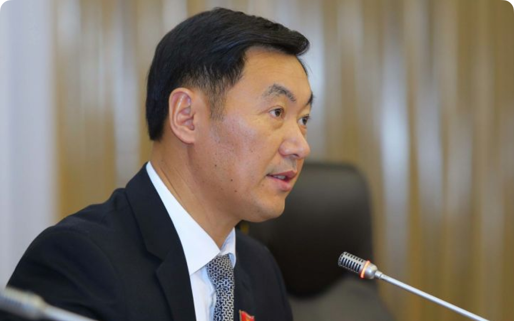

-
-
В демократической стране это недопустимо, - депутат Токтошев о прослушке ряда лиц
For.kg -
Эмиль Токтошев: Я не автор проекта Конституции
Радио
Азаттык -

Депутат потребовал давать точную информацию по коронавирусу
gezitter -
Эмиль Токтошев, депутат ЖК: «Я получил мандат, чтобы поработать для народа»
gezitter -
Эмиль Токтошев: «Я не говорил, что пинался бы с женщинами»
gezitter -
Эмиль Токтошев, депутат ЖК от фракции «Ата Мекен»: «Если перенесем силовые структуры на юг, то решим вопрос границы»
gezitter -
Эмиль Токтошев, депутат Жогорку Кенеша: «Министерство социального развития вовлекается в коррупцию»
gezitter -
В Жогорку Кенеше прозвучала критика относительно отношений с Китаем
gezitter -
Эмиль Токтошев, депутат ЖК: «По Тогуз-Торо я обращался к главе правительства в начале февраля»
gezitter -
Эмиль Токтошев, депутат Жогорку Кенеша: «Министерство социального развития вовлекается в коррупцию»
gezitter -
Эмиль Токтошев, депутат Жогорку Кенеша: "Нынешние депутаты выступают с инициативами, соответствующими их уровню"
gezitter -
Эмиль Токтошев: "За охоту на запрещенных к отстрелу животных предусматривается наказание от двух до пяти лет лишения свободы"
gezitter -
Отныне чиновники не смогут проводить пышные празднества
gezitter -
«Я узнал об этом в соцсетях». Депутат Токтошев заявил, что не подписывал законопроект о внесении изменений в Конституцию
kloop -
Депутат Эмиль Токтошев устроил одиночный пикет в Жогорку Кенеше
vesti.kg -
Убийство Айзады Канатбековой. Депутат пришел на заседание ЖК с плакатом
24.kg -
Эмиль Токтошев: АЗС добавляют по 10 сомов на каждый литр ГСМ. Куда смотрит правительство?
barometr